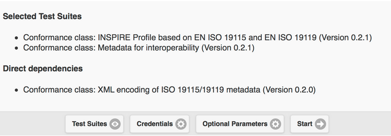
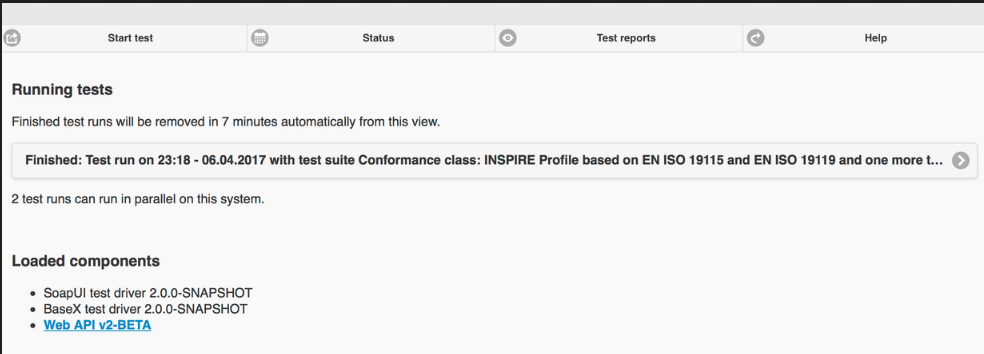

Guida rapida ETF¶
Nota
Questo progetto è incluso solo nel disco della macchina virtuale (VMDK) OSGeoLive
ETF è un framework di test open source per la validazione di dati spaziali, metadati e servizi web nelle Spatial Data Infrastructures (SDI). Il progetto di ETF è guidato da tre obiettivi: essere facile da usare, coerente con gli standard e in grado di testare tutte le risorse di una SDI.
Questa Guida Rapida descrive come:
navigare nell’applicazione web
inizia un test
monitor a test run
watch and manage test reports
Contenuti
Introduzione¶
From the Start menu, select . The application will take a few moments to start up and will open a web page at http://localhost:9090/ETF
In the header, there is a menu with 4 options, each representing different views and functionalities:

The first one is Start test. In this section all available (i.e. installed) Executable Test Suites are listed. Within this section, an Executable Test Suite can be selected and run against a Test Object.
The second one is Status. This one shows all tests that are currently being executed on the system and allows to open a monitor view for single test runs to check the status of any running test. Moreover, the components currently loaded are shown below the running tests.
The third one is Test reports. In this one the results of any completed test can be checked, analysed in detail or downloaded.
The fourth one is Help. This one is a link to the documentation. Inside it, there are guides on how to use all functionalities of ETF.
Inizia test¶
Test Suite Selection¶
The landing view shows the available Executable Test Suites.

Additional information about a Test Suite can be accessed by clicking on the plus button.

This information:
Includes a description of the Test Suite.
May include a link to the Abstract Test Suite from which the Executable Test Suite has been derived (Source).
May include the Test Suite dependencies, which are automatically executed with the Test Suite in a Test Run (Pre-requisite conformance classes).
May include the name of associated Tags which are used to group the Test Suites in the view.
The name of applicable Test Object Types (explained in the next section).
Includes general information like the version, author and last editor, creation and change dates.
To start a Test Run, a Test Suite must be selected with a click on the use flip switch on the right-hand side.

Una volta selezionata almeno una Suite di Test, appare il pulsante Avvia.
A Test Suite is only applicable to certain Test Object Types, which are listed in the description. Multiple Test Suites can be selected for one Test Run, but must be applicable to the same Test Object Type. Once one Test Suite is selected, the flip switch of all other Test Suites having different Test Object Types is disabled.

A Test Suite may depend on other Test Suites. The dependencies are also shown in the description of the Test Suites. These dependencies are also automatically executed during the test run.
A click on the Start button will open a new view that asks the user about the target resource to be tested.
Test Run configuration¶

The Label field is mandatory and automatically preset with the current time and names of the selected Test Suites. The Label will be shown in the Test reports overview and can be changed in order to help find the report again after a test run.
The style of the view may depend on the selected Test Suites.
File-based Tests¶
The following elements are shown when Test Suites have been selected that test one or multiple test data files.
If File upload is selected as Data source, one or multiple local files can be selected and uploaded to the ETF. The ETF only accepts files with XML and GML file ending and ZIP files containing these two file types.
Nota
Other files, like schema definition files, cannot be used and are silently ignored by the ETF!

La dimensione massima del file caricabile viene visualizzata quando si sposta il mouse sul punto interrogativo.
Se i dati sono disponibili sul web, possono essere testati fornendo un unico URL. Dopo aver selezionato File remoto (URL) come Origine dati, è possibile inserire un URL a un singolo file XML, GML o ZIP.

Se l’URL richiede l’autenticazione, è possibile fornire nome utente e password facendo clic su Credenziali.

Service Tests¶
I seguenti elementi vengono visualizzati quando sono state selezionate Suite di Test che testano un servizio.
L’URL di un servizio deve essere inserito iniziando con http:// o https://.
Se il servizio richiede l’autenticazione, è possibile fornire nome utente e password facendo clic su Credenziali.
Dipendenze e Parametri¶
The Test Suites button shows some basic information about the selected Test Suites and - if applicable - about the direct dependencies.
If the Test accepts parameters, they are shown in the Test Suite Parameters section. Optional parameters can be displayed by clicking on the Optional Parameters button. A description of the parameters is displayed when the mouse is moved over the question mark.
Nota
Nella maggior parte dei casi è possibile utilizzare i valori preimpostati.

Finally the test can be started by clicking on the Start button. The view then changes automatically to the Monitor View.
Monitor test runs¶
After a Test Run has been started the Monitor View is shown.

The blue bar indicates the progress.

The console area shows information and result messages. The Test Run can be canceled with a click on the Cancel button.
The view can be left, for instance with the X Button in the upper left corner. Also when the browser is closed, the Test Run execution continues on the server.
To reopen the Monitor View after it has been closed, select in the menu bar the Status view. The Status view shows all running tests. A click on the Test Run opens the Monitor View of that Test Run.
When a Test Run finishes and the Monitor View is opened, the Test Report is displayed automatically.
Test Reports¶
The Test Reports view shows all reports that have been generated from Test Runs.

Facendo clic sul pulsante maggiori informazioni, vengono visualizzate le informazioni relative all’ora di inizio, allo stato dei risultati del test, al nome dell’Oggetto del Test e alle Suite di Test utilizzate.
A Test Report can be opened again by clicking on Open report or can be downloaded as HTML file by clicking on the Download button.
The log file of the test run can be inspected with the Open log button. By clicking on the Delete report button, the report will be deleted permanently.
Ispezione dei rapporti di test¶
La parte superiore di un Rapporto di Test mostra informazioni generali, tra cui lo Stato del risultato complessivo del test, l’ora di inizio, la durata e una tabella che riassume lo stato di tutti i test su diversi livelli.

I Rapporti di Trova sono interattivi. L’interruttore Mostra può essere usato per filtrare Solo i test falliti o Solo i test manuali. Tutti disattiva il filtro.
The Level of detail switch is used to show additional technical information in the reports.

The test results are summarized hierarchically in a report. At the top level there are the Test Suites.
By clicking on one test suite, a description and all lower level tests in that test suite are shown. Failures in a test suite can be immediately recognized by the red color. The number of failed tests is shown in the top-right corner.

The green color indicates a passed test. Passed tests, which require additional manual test steps that could not be automated, are colored orange. The orange color may also indicate a test that has been skipped because it depends on another test that has failed. The exact status can be found below the description.
The number of levels depends on the tested Test Object. If service tests have been executed the hierarchy is as follows:
Executable Test Suites
Test Modules (bundles Test Cases)
Test Cases (bundles Test Steps)
Test Steps (interactions with the service, bundles Test Assertions)
Test Assertions (atomic tests)
In a file-based test, Test Modules and Test Steps do not exist and are not shown in the report.
Each test provides a description on how aspects are tested and lists the requirements. The test may possess a link to an abstract test suite, from which the test has been derived (Source).

Le asserzioni rappresentano interrogazioni di test atomiche al livello più basso. Le asserzioni fallite, di colore rosso, visualizzano messaggi di errore nella sezione Messaggi.

Informazioni utili possono essere trovate anche al livello superiore, come ad esempio la risposta di un servizio al livello Test Step (notare il link Apri risposta salvata nel report).

Risorse¶
Using the instructions provided above, please find below a predefined set of resources that you can test in the ETF:
GML data sets: some predefined data sets can be downloaded from here .
WMS services: a list of services is available here.
WFS services: a list of services is available here.
Nota
Some of the resources do not pass all the tests, so you can try to fix them before validating them again
E ora?¶
This was just a very brief overview of the ETF. There is more information in the demo installation and on the ETF GitHub space.
Please also check: